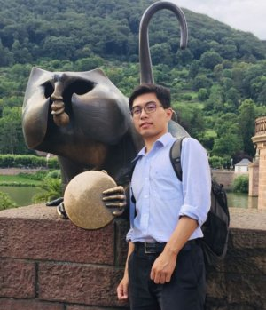

I am an Assistant Professor at the Medical School of Nanjing University and a member of EMG@NJU Group, led by Prof. Ning Gu. From March 2019 to April 2023, I served as an Associate Researcher at the School of Electrical Science and Technology of Nanjing University and a member of CITE Lab, led by Prof. Xun Cao.
I currently collaborate with Prof. Bo Xiong @ PKU and Dr. Chengkang Shen @ NJU. My research interests include Computational Optics and Microscopy, especially focusing on designing novel and miniaturized microscopes (on-chip microscope, light-field microscope, and micro-endoscope) and developing iterative/intelligent algorithms based on physical imaging processes (3D fluorescent imaging and 3D echocardiogram). For students who are interested in our research area, welcome to join us.
Reviewer (since 2019):
Light: Science & Applications, APL Photonics, npj Imaging,
Optica Journals (Optica, Photonics Research, Optics Express, Optics Letters, Biomedical Optics Express, Applied Optics, JOSA A),
IEEE Transactions on Pattern Analysis and Machine Intelligence (TPAMI),
IEEE Transactions on Circuits and Systems for Video Technology (TCSVT).